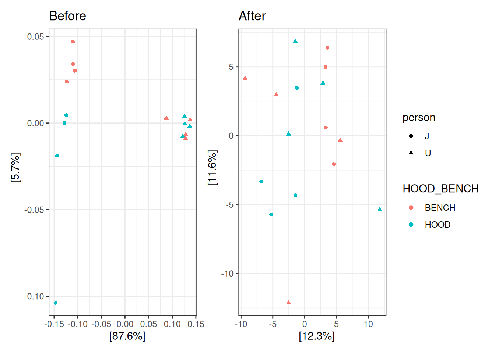

Plot Alpha diversity with p-value calculated via Linea Mixed Model (LMM) with fixed effect is condition (HOOD vs. BENCH) conditioned on random effect technicians.
Because the sequencing depth of each sample are not significantly various, I applied the rarefaction as normalization.
Type III Analysis of Variance Table with Satterthwaite's method
Sum Sq Mean Sq NumDF DenDF F value Pr(>F)
HOOD_BENCH 0.021846 0.021846 1 13 1.7478 0.209
Permutation test for adonis under reduced model
Blocks: metadata$person
Permutation: free
Number of permutations: 99999
adonis2(formula = dist_matrix ~ HOOD_BENCH, data = metadata, permutations = perm)
Df SumOfSqs R2 F Pr(>F)
Model 1 280.8 0.06631 0.9943 0.1429
Residual 14 3954.2 0.93369
Total 15 4235.0 1.00000
Permutation test for adonis under reduced model
Blocks: metadata$person
Permutation: free
Number of permutations: 99999
adonis2(formula = dist_matrix ~ HOOD_BENCH, data = metadata, permutations = perm)
Df SumOfSqs R2 F Pr(>F)
Model 1 0.02379 0.03378 0.4895 0.02711 *
Residual 14 0.68048 0.96622
Total 15 0.70427 1.00000
---
Signif. codes: 0 '***' 0.001 '**' 0.01 '*' 0.05 '.' 0.1 ' ' 1
Visualization
Code
dist_mx <-"euclidean"otu_tab <- microbiome::abundances(pseq_clr)# Function to get residuals from Technician effectget_residuals <-function(taxa_vector, batch_factor) {# We fit: Abundance ~ Technician fit <-lm(taxa_vector ~ batch_factor)# We return the residualsreturn(residuals(fit))}otu_residuals <-apply(otu_tab, 1, function(x) get_residuals(x, metadata$person))otu_residuals <-t(otu_residuals)ps_resid <- pseq_compotu_table(ps_resid) <-otu_table(otu_residuals, taxa_are_rows =TRUE)# Before (Original CLR)ord_before <-ordinate(pseq_comp, method ="PCoA", distance = dist_mx)p1 <-plot_ordination(pseq_comp, ord_before, color ="HOOD_BENCH", shape ="person") +theme_bw() +ggtitle("Before")# After (Residuals)ord_after <-ordinate(ps_resid, method ="PCoA", distance = dist_mx)p2 <-plot_ordination(ps_resid, ord_after, color ="HOOD_BENCH", shape ="person") +theme_bw() +ggtitle("After")p1 + p2 +plot_layout(guides ="collect")

Remarks: With compositional transformation and bray distance, the NCT samples are significantly different between HOOD vs. BENCH when accounting for technicians.